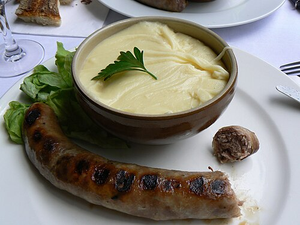

Aligot (Occitan: Aligòt) is a dish made from cheese blended into
mashed potatoes (often with some garlic) that is made in L'Aubrac (Aveyron, Cantal,
Lozère) region in the southern Massif Central of France. This fondue-like dish from the
Aveyron department is a common sight in Auvergne restaurants.
Background
Traditionally made with the Tomme de Laguiole (Tomme fraîche), or
Tomme d'Auvergne cheese, aligot is an Occitan speciality highly appreciated in the local
gastronomy with Toulouse sausages or roast pork. Other cheeses are also used in place of
Tomme, including Cantal, mozzarella and Laguiole. The choice of cheese is important, and
strongly affects the result. Tomme is not easily available outside France; many other
cheeses are reported to be too strong. The cheese must be mild, with a lactic tang, but
not too much salt, and melt easily. A comparison of the cheeses available in the UK found
creamy (rather than the crumbly variety) Lancashire to be best, rejecting most other
suggestions; other cheeses will be needed where neither Tomme nor Lancashire are available.
Floury, rather than waxy, potatoes are preferable.

Ingredients
Aligot is made from mashed potatoes blended with butter, cream,
crushed garlic, and melted cheese. The dish is ready when it develops a smooth, elastic
texture. While recipes vary, the Larousse Gastronomique gives the ingredients as 1 kg
potatoes; 500 g tomme fraîche, Laguiole, or Cantal cheese; 2 garlic cloves; 30 g butter;
salt and pepper.